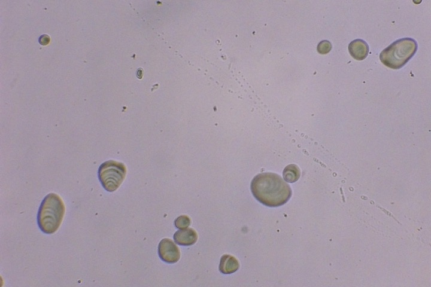
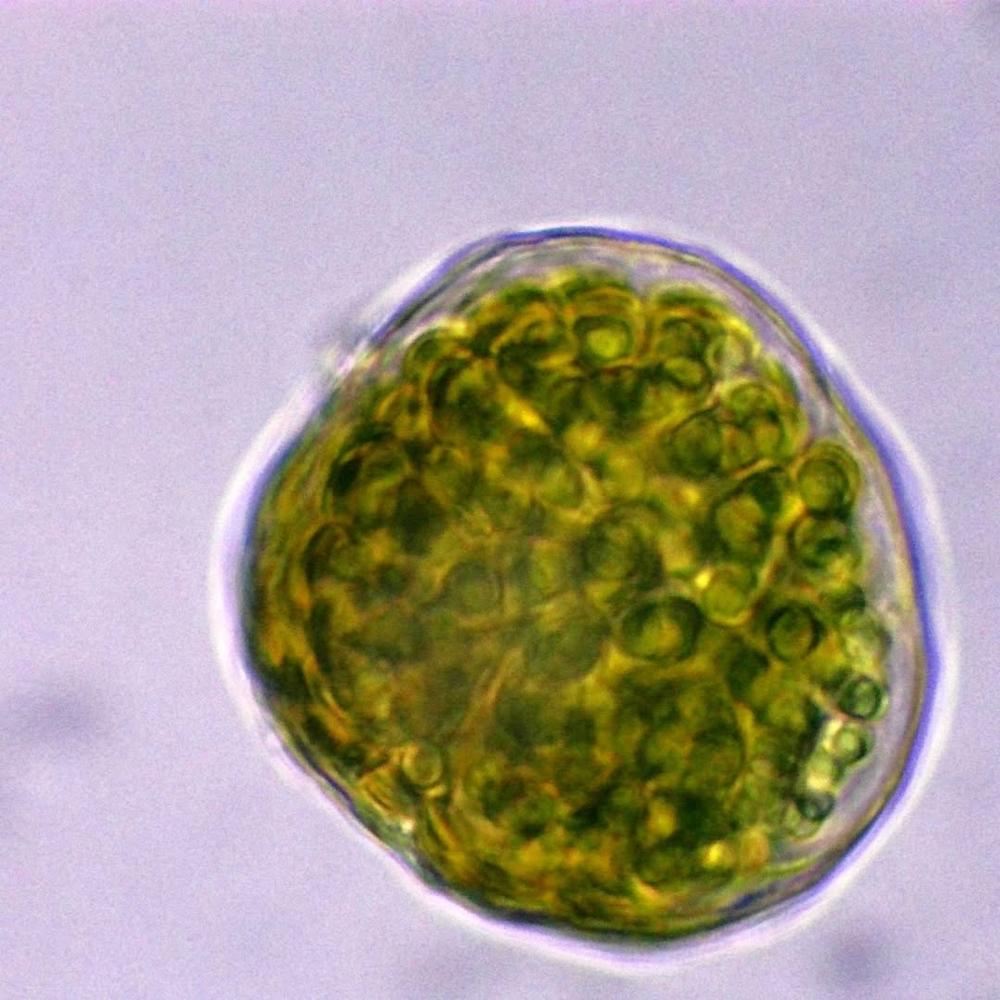

Raisin — Épiderme Structure cellulaire de la peau d'un raisin ; les membranes sont nettement visibles.
 Amidon — Pomme de terre Dépôt obtenu après avoir laissé séjourner une pomme de terre dans l'eau pendant 24h.
 Algue unicellulaire Trouvée dans la neige au printemps 2025 ; on distingue plus de 60 autospores.